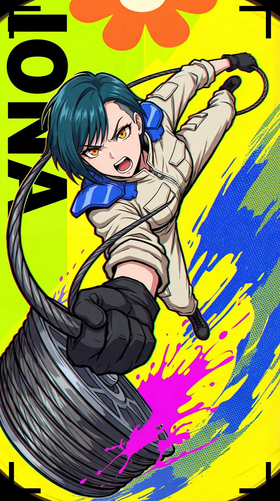
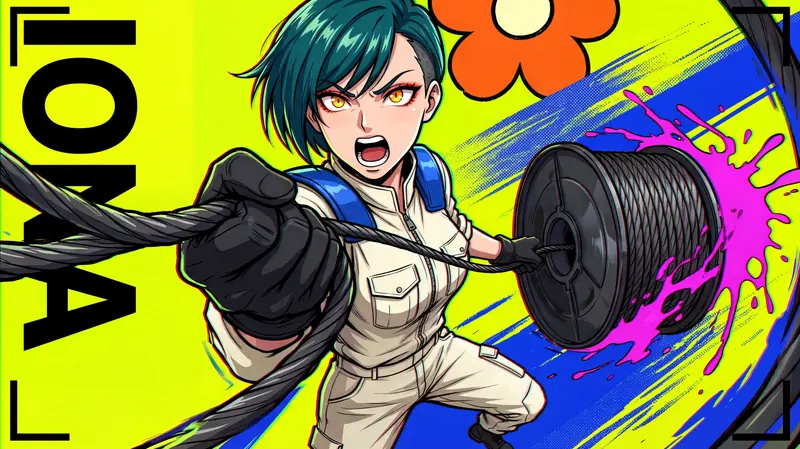
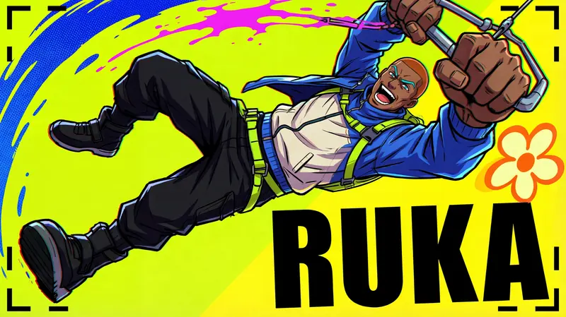
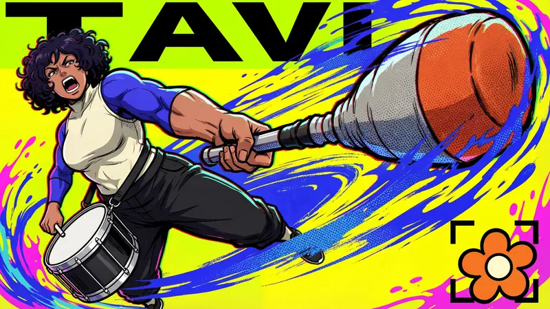
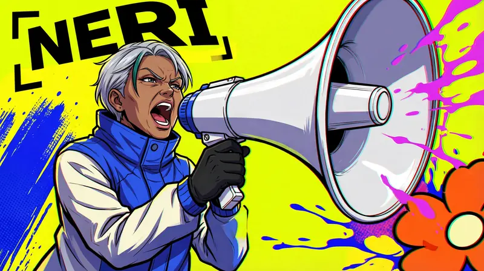

Type Posters · AI image style prompt
Acid Parallax
Acid-yellow fisheye character posters: frame-breaking black type, wet blue brush gestures, magenta splatter, flat flower shapes and hand-drawn RGB misregistration around one adult original character.

4 example cases
Same style.json, different subjects. Each case's values are in the examples section of the JSON.




What this style does
Adult original-character posters on flat acid-yellow fields with extreme fisheye distortion: frame-breaking black type, wet blue brush gestures, magenta splatter, flat flower shapes and local hand-drawn RGB misregistration build a high-tension structure.
Signature traits
- Original adult anime street-action character key art with extreme fisheye foreshortening, tilted axes and open-mouth exertion, never calm portraiture.
- Acid lime and flat lemon yellow form the ground, black structural letters and brackets anchor it, cobalt blue carries motion and hot magenta carries fluid impacts.
- Use thick irregular hand-inked contours and simple one-shadow cel planes for characters, with loose red-green-cyan separated sketch contours visibly concentrated along selected edges.
- Wet cobalt/lime brush swipes and coarse halftone patches occupy substantial local motion wedges, while broad flat fields remain untextured.
- Giant cropped heavy upright Latin sans name letters become tilted perspective apertures interlocking with the figure, black broken corner brackets, splatter and oversized flat petal impact discs.
- Keep 15–22% quiet flat field, at least four overlapping planes, violent near/far scale jumps and asymmetrical edge exits; no tidy poster margins.
style.json
{
"schema_version": "2.2",
"style_name": "Acid Parallax",
"style_version": "1.0",
"style_slug": "acid-parallax",
"style_summary": "Adult original-character posters on flat acid-yellow fields with extreme fisheye distortion: frame-breaking black type, wet blue brush gestures, magenta splatter, flat flower shapes and local hand-drawn RGB misregistration build a high-tension structure.",
"category": "Type Posters",
"environment_variables": {
"ASPECT_RATIO": "9:16 or 16:9",
"STYLE_FIDELITY_ANCHORS": "Runtime shared CORE and FLEX rules",
"SOURCE_CONTENT_TO_AVOID": "Runtime exclusions from all four references",
"SUBJECT": "Original adult identity and fully covered clothing",
"SUBJECT_ACTION": "Pose, camera and expressive action",
"MAIN_TEXT": "Exact short original character name",
"DESIGN_DIRECTION": "Title, hero and graphic device composition, including landscape adaptation"
},
"style_fidelity_anchors": [
"[CORE] Original adult anime street-action character key art with extreme fisheye foreshortening, tilted axes and open-mouth exertion, never calm portraiture.",
"[CORE] Acid lime and flat lemon yellow form the ground, black structural letters and brackets anchor it, cobalt blue carries motion and hot magenta carries fluid impacts.",
"[CORE] Use thick irregular hand-inked contours and simple one-shadow cel planes for characters, with loose red-green-cyan separated sketch contours visibly concentrated along selected edges.",
"[CORE] Wet cobalt/lime brush swipes and coarse halftone patches occupy substantial local motion wedges, while broad flat fields remain untextured.",
"[CORE] Giant cropped heavy upright Latin sans name letters become tilted perspective apertures interlocking with the figure, black broken corner brackets, splatter and oversized flat petal impact discs.",
"[CORE] Keep 15–22% quiet flat field, at least four overlapping planes, violent near/far scale jumps and asymmetrical edge exits; no tidy poster margins.",
"[FLEX] Shift the title, figure mass and impact device each case while keeping palette roles, diffuse flat light and the common aperture/brush/offset-line vocabulary.",
"[FLEX] Adapt the action to both ratios with a fresh composition, preserving the character and readable short name rather than cropping a finished image."
],
"source_content_to_avoid": [
"All existing IP characters including Zenless Zone Zero and Corin Wickes; no copied face, hair or costume.",
"R1 maid headdress, screw props and original katakana glyph shapes.",
"R2 cap plus headphones pose, underboob and exposed torso framing.",
"R3 round goggles plus OK-hand over eye and cleavage emphasis.",
"R4 sunglasses plus finger-in-mouth; no mouth-touching hand gesture.",
"No source words, signatures, signature-like tags, dates, creator marks or logos, including ZENLESS ZONE ZERO, CORIN WICKES and bachser-like scrawls."
],
"visual_deconstruction": {
"genre": "Original adult anime street-action character key art, not advertising slogan layouts.",
"energy": {
"density": "78–85% active surface, 15–22% flat quiet field; reference quiet estimates R1 22%, R2 3%, R3 9%, R4 32%.",
"layering": "Four or five interpenetrating planes: ground, structural letter/bracket, figure, brush/flower, local splatter.",
"disorder": "Intentional loose contour construction, local RGB misregistration, wet brush edges; no uniform grit.",
"tension": "Extreme near/far enlargement, overhead fisheye, tilted axes, open-mouth action and hard frame exits are essential."
},
"fusion": {
"genre": "All four: anime adult character key art; replace all identities.",
"palette": "R1 acid lime/magenta/black, R2 cobalt, R4 yellow, R3 cream/orange flat impact shapes.",
"finish": "R3 thick flat ink base + R4 loose RGB sketch edges; R2 wet brush and halftone restricted to motion wedges. Do not blend into glossy painted faces.",
"type": "R1 cropped black heavy graphic type transformed into readable Latin perspective apertures.",
"layout": "R3 fisheye and R1 graphic interlock, with R4 severe close crop and R2 sweeping momentum.",
"secondary": "R1 black brackets and fluid splash; R3 flower shape transformed to isolated impact disc.",
"balance": "Each case shows all four contributions; R1 contributes roughly 30%, R2 25%, R3 25%, R4 20% of visible style."
},
"grammar": [
"High-chroma anime street key art",
"Foreshortening, flat ink, coarse halftone, print misregistration"
],
"signature": {
"R1": "Maid/screws and katakana sidewall replaced by adult work equipment and Latin aperture letters.",
"R2": "Cap/headphones and exposed-torso leap replaced by practical full clothing and job-driven action, strokes form local wedges.",
"R3": "Goggles/OK-hand/flower wreath replaced by tool-scale fisheye and separated petal impact discs.",
"R4": "Sunglasses/mouth gesture/sideways glamour crop replaced by exposed eyes, shouting exertion and offset lines on equipment and sleeves."
},
"series_constants": "Same lime/yellow ground, black type/brackets, cobalt motion, magenta fluid, orange/cream petals, diffuse flat light. A kit of apertures rather than repeated layout."
},
"composition": {
"ratio_pair": "9:16 / 16:9, user requested; generate natively, never pad or crop",
"structure": "Graphic type, brackets and flat fields occupy at least 30% visually; no decorative microtitle.",
"placement": "Left vertical / bottom perspective ramp / upper broken beam / crossing diagonal; hero right / diagonal-left / left-centre / lower-left with right prop."
},
"typography": {
"class": "Very heavy upright block grotesk sans, Latin uppercase; large perspective distortions allowed, not italic script or serif.",
"primary": "Only MAIN_TEXT is required text, spell each glyph exactly; partial overlap allowed while still readable.",
"texture": "No texture wording needed; never include any signature tag."
},
"color_palette": {
"ground": [
"acid lime #D8F000",
"lemon yellow #F7DD20"
],
"structure": "ink black #101216",
"motion": "cobalt #0756C9",
"fluid": "hot magenta #E32FE3",
"petals": [
"orange #FF913F",
"cream #FFF0C5"
],
"character": "deep teal hair, warm skin, cream/cobalt clothing; red/green/cyan only as local narrow offset lines"
},
"image_treatment": {
"base": "Uneven thick black hand ink, flat cel fill with one hard shadow, loose construction lines; no soft face gradients, lens blur, glow or glossy game render.",
"local_effects": "Wet swipes and coarse dots on 20–30% surface, roughly 2–5px dots at 1k short side; RGB offsets 1–4px at 1k along 15–25% contours. Magenta splatter clean fluid silhouettes; black ink edges stay slightly alive.",
"light": "Neutral diffuse graphic lighting, same across all cases; no volumetric effects."
},
"design_rules": [
"Character is always the main focal point despite near-lens props.",
"Structural huge letters interlock with character and motion, never small captions.",
"Keep all four reference contributions visible in every sample.",
"Preserve 15–22% flat quiet surface and local texture containment.",
"Adults fully clothed in practical action; no erotic crop.",
"Primary name must remain readable letter by letter; source wording and signature tags forbidden."
],
"do": [
"Use extreme scale jumps and hard crop.",
"Give every case a new title/hero/device arrangement.",
"Review glyphs enlarged and compare finish to each source."
],
"avoid": [
"Calm polished portrait with decorative name.",
"All-over distressed texture or smooth glossy anime game shading.",
"Copied signature pairings, costume silhouettes or source content."
],
"prompt_template": "Create one full-bleed {ASPECT_RATIO} original adult anime character key-art poster in the Acid Parallax fused style.\nCAMERA FIRST: ultra-wide 14mm fisheye, lens almost touching the nearest hand or prop, which looms enormous and distorted while the body shrinks sharply into depth; strongly tilted horizon and curved edges. Never an eye-level three-quarter view.\nDRAWING STYLE: Japanese anime cel illustration with sharp tapered ink lines, thick uneven outer contours, expressive anime eyes and a wide open shouting mouth; not Western comic-book rendering. Red and cyan line-offset ghosting must be clearly visible along the outer contours and hair, like a misregistered print.\nClothing stays fully closed to the throat; no neckline opening.\nSubject: {SUBJECT}\nAction/camera: {SUBJECT_ACTION}\nStructural composition: {DESIGN_DIRECTION}\nPrimary text, exact: \"{MAIN_TEXT}\" and nothing else; spell it letter by letter exactly as given, never adding, repeating or dropping a letter, and add no other words or letters anywhere. Use enormous heavy black upright Latin block sans, structurally interlocked, every letter identifiable. No slogans or signature tags.\nFusion: R1 supplies acid lime ground, hot magenta splash, black cropped graphic letters and corner brackets; R2 supplies substantial wet cobalt/lime brush swipes plus coarse halftone patches; R3 supplies overhead fisheye, thick uneven hand ink, flat cel shadows and bold flat flower impact shapes; R4 supplies flat yellow and visibly loose red/green/cyan displaced line art along selected contours. Every reference must remain visible. Preserve about 15–22% plain field; texture is localized, not dirt everywhere.\n{STYLE_FIDELITY_ANCHORS}\nExclude: {SOURCE_CONTENT_TO_AVOID}",
"negative_prompt": "Existing IP characters, source costumes/poses/names, maid headdress, screw props, cap and headphones, goggles, sunglasses, OK hand, fingers in mouth, cleavage emphasis, underboob, minors, fan-service, signatures, dates, watermark, faux creator tag, calm central portrait, tiny title, polished 3D anime, soft glow, blurry depth of field, uniform distressed texture, extra fingers, illegible name.",
"examples": [
{
"case_name": "cable-rigger",
"values": {
"MAIN_TEXT": "IONA",
"SUBJECT": "A 32-year-old woman cable rigger, short deep-teal swept hair with one shaved temple, strong adult face, amber eyes; fully zipped cream utility coverall with cobalt shoulder pads and black work gloves. No hat, eyewear or headphones.",
"SUBJECT_ACTION": "Overhead 14mm fisheye: she shouts while hurling a large smooth open-centred cable reel toward the bottom-left lens; her far body recedes to the upper right. One hand grips the reel hub, the other pulls a cable taut. Big tool-to-body scale jump.",
"DESIGN_DIRECTION": "Hero upper/right, enormous reel lower-left; IONA runs tall vertically down left as individual readable giant black letters, partly behind cable; broken black brackets anchor opposite corners. Blue wet brush wedge right; magenta splash flies from reel edge; one giant flat orange/cream flower impact cropped at top. For landscape expand reel left to hero right; keep title vertical on left, no centered layout."
}
},
{
"case_name": "kite-racer",
"values": {
"MAIN_TEXT": "RUKA",
"SUBJECT": "A 29-year-old male urban kite racer with copper buzzcut, dark brown skin, adult angular face, teal eyebrows; opaque high-neck cobalt/cream windbreaker, full black trousers, substantial boots and lime harness, no headwear or eyewear.",
"SUBJECT_ACTION": "Near-vertical top-down fisheye sees his entire body diving diagonally, knees bent at different depths; a huge angular kite control bar thrusts toward upper-right lens, the far boots are tiny, face shouting in exhilaration. No cap/headphones or bare torso.",
"DESIGN_DIRECTION": "Slim full figure lower-left to upper-middle, bar very large upper-right. RUKA is a massive tilted black name ramp along bottom/right, with leg occluding only a small letter edge. Blue wet brush crescent top-left; magenta splash follows kite cable; bold flat orange/cream petal disc below left hand. Landscape recompose long diagonal across frame, title low-right, brush top-left."
}
},
{
"case_name": "drum-breaker",
"values": {
"MAIN_TEXT": "TAVI",
"SUBJECT": "A 36-year-old muscular woman street percussionist, plum-black short curly hair, tan skin, broad adult face; opaque cream high-neck sleeveless sports tunic over cobalt long sleeves, loose black trousers, no cap, headphones or goggles.",
"SUBJECT_ACTION": "Violent oblique overhead fisheye: face and torso left/centre yelling in effort, huge padded drum mallet punches toward right lens, second hand strikes a waist-strapped barrel drum in lower-left. Exaggerated near hand and mallet but anatomically clear.",
"DESIGN_DIRECTION": "TAVI stretches as giant black letters across a broken upper beam behind raised arm, still readable. Drum lower-left, huge mallet right, hero left; a big flat orange/cream flower impact disc bottom-right. Cobalt wet swipes and coarse halftone follow the mallet arc, magenta droplets cross the letter aperture; RGB sketch edges on drum and sleeves. Landscape expands the mallet across right half, keeps upper split title."
}
},
{
"case_name": "festival-caller",
"values": {
"MAIN_TEXT": "NERI",
"SUBJECT": "A 48-year-old woman festival caller with silver cropped hair, one dark teal streak, deep warm brown skin, adult facial lines; cobalt high collar rain jacket with cream panels, completely closed, black gloves. No eyewear, hat or headset.",
"SUBJECT_ACTION": "BOLD ultra-wide fisheye close-up: her shouting face anchors lower-left while a huge faceted handheld megaphone bell leaps into upper-right foreground, about half the frame; she grips its handle far from her mouth. Full shoulder gesture pulls diagonally across the frame, no fingers near lips.",
"DESIGN_DIRECTION": "NERI forms a huge diagonal black name beam upper-left to centre, crossing behind the megaphone bell; preserve every letter identity. Black brackets are dislocated near left/top and lower/right. A broad blue wet fan with halftone emerges lower-left; magenta paint ribbons arc beyond the bell, giant flat orange/cream flower disc is cut by bottom-right edge. Landscape puts bell on right and face left, diagonal name crosses upper-left to middle; harder scale jump than the references."
}
}
]
}